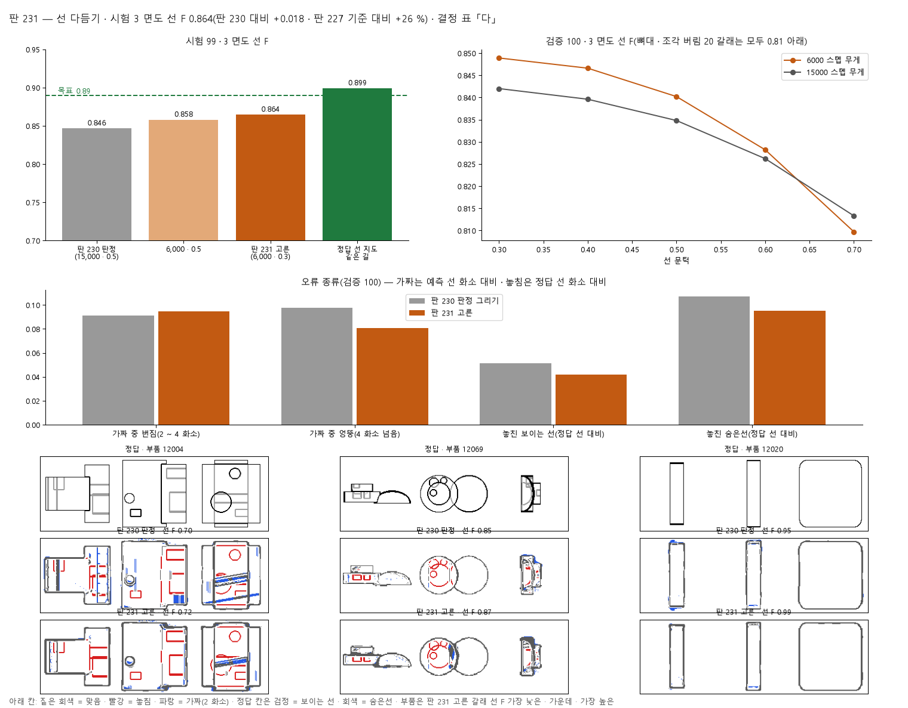

m1_tr0231_h000_선다듬기
축 시점 예측 선을 가늘게(뼈대) · 문턱 · 짧은 조각 버림 · 무게(6,000 · 15,000)를 검증 부품 3 면도로 골라 그리면 시험 3 면도 선 F 가 0.89 에 닿나?
판정 · 다 — 검증에서 고른 갈래(6,000 · 문턱 0.3 · 뼈대 없음 · 조각 0) 시험 3 면도 선 F 0.864(tr230 0.846 대비 +0.018 · 95 % 구간 0.013 ~ 0.024 · tr227 기준 +26 %) · 확인 통과(tr230 그리기 0.8464 다시 냄) · 뼈대 · 조각 버림은 모두 0.81 아래 · 문턱 낮을수록 오름(0.3 이 칸 끝) · 남은 놓침은 숨은선 → 선 지도 자체(먼저 스텝 무게 · 낮은 문턱을 검증 3 면도로)
분석
한 줄로
물음: 축 시점 예측 선을 가늘게(뼈대) · 문턱 · 짧은 조각 버림 · 무게(6,000 · 15,000)를 검증 부품 3 면도로 골라 그리면 시험 3 면도 선 F 가 0.89 에 닿나?
답: 안 닿았다(결정 표 「다」). 검증에서 고른 갈래(6,000 스텝 · 문턱 0.3 · 가늘게 안 함)는 시험 0.864 로 tr230 판정(0.846)보다 0.018 올랐다(95 % 구간 0.013 ~ 0.024). tr227 기준 대비 +26 % 다. 선을 가늘게 하면 오히려 크게 떨어졌다.
왜 이 판을 했나
tr230 그림에서 15,000 스텝 무게의 선이 두껍게 번져 가짜로 잡히는 것처럼 보였다. 학습 없이 그리기만 바꿔서 얼마나 오르는지 보고 싶었다. 사용자는 「성능 더 올리고 U-Net 으로 넘어가자」고 했다.
바꾼 것 하나
3 면도 그리기에서 축 시점 선을 다듬는 방법만 바꿨다. 무게 둘 × 문턱 다섯 × 뼈대 있음 · 없음 × 짧은 조각 버림 있음 · 없음, 모두 40 갈래다. 검증 부품 100 개로 하나를 고르고 시험 99 에는 한 번만 쟀다. 망 · 숨은선 그리기는 tr230 과 같다.
결과

| 시험 99 | tr231 고른(6,000 · 0.3) | 6,000 · 0.5 | tr230 판정(15,000 · 0.5) | 정답 선 지도 같은 길 | 목표 |
|---|---|---|---|---|---|
| 3 면도 선 F | 0.864 | 0.858 | 0.846 | 0.899 | 0.89 |
| 보이는 선 F | 0.918 | 0.916 | 0.917 | 0.985 | |
| 숨은선 F | 0.383 | 0.399 | 0.400 | 0.336 |
- tr230 판정 그리기를 그대로 돌리면 0.8464 가 다시 나왔다(확인 통과).
- 오류 종류(검증 100 · tr230 판정 → tr231 고른): 가짜 중 번짐 9.1 → 9.4 % · 엉뚱한 선 9.8 → 8.1 %(예측 선 화소 대비) · 놓친 보이는 선 5.1 → 4.2 % · 놓친 숨은선 10.7 → 9.5 %(정답 선 화소 대비).
왜 이렇게 나왔나
확인한 것
- 문턱을 낮출수록 검증 3 면도가 올랐다(6,000 무게 0.7 → 0.3 에 0.810 → 0.849). 선을 더 많이 그리는 쪽이 이긴다.
- 뼈대 · 조각 버림 20 갈래는 모두 0.81 아래로, 가늘게 하지 않은 갈래보다 낮았다.
- 고른 갈래와 6,000 · 0.5 의 차이는 +0.007(구간 0.004 ~ 0.009)로 작다. 오름의 대부분은 무게를 6,000 으로 바꾼 데서 왔다.
짐작 (아직 확인 안 함)
- tr230 에서 「선이 두꺼워져 F 가 깎인다」고 짐작했는데 틀렸다. 번짐은 오히려 조금 늘었고, 오른 것은 엉뚱한 선과 놓친 선이 줄어서다. 병목은 두께가 아니라 놓친 선(특히 숨은선)이다.
- 그림 아래 칸의 빨강은 대부분 안쪽 구멍 · 홈의 숨은선이다. 숨은선은 9 시점 실루엣 껍질에서 그리는데, 실루엣으로는 안쪽 구멍이 안 보인다.
한계
- 시험 99 · 검증 100 · 한 번 돌림.
- 고른 문턱 0.3 이 칸 끝이다(0.3 ~ 0.7 중 가장 낮은 값). 더 낮은 문턱은 재지 않았다.
배운 것과 다음
학습 없이 그리기만 바꿔서는 0.864 근처가 천장이다. 남은 차이는 두께가 아니라 놓친 선이고, 대부분 숨은선이다.
- 결정 표 「다」: 선 지도 자체를 고친다. 먼저 싼 쪽으로, tr230 이 남긴 스텝 무게 15 개와 더 낮은 문턱(0.1 · 0.2)을 검증 3 면도로 고른다(tr232).
- 그래도 모자라면 선 지도 256 해상도 학습, 또는 숨은선을 따로 내는 길.
- 지금까지: tr227 기준 0.686 → 0.864(+26 %).
판 기록
- 카드 · 코드 커밋 97a174f(돌리기 전) · 보기 4.5 분 · 숨은선 2 분 · 잼 3 분(모두 10 분)
- 판정 잼.json · 그림 그림.png